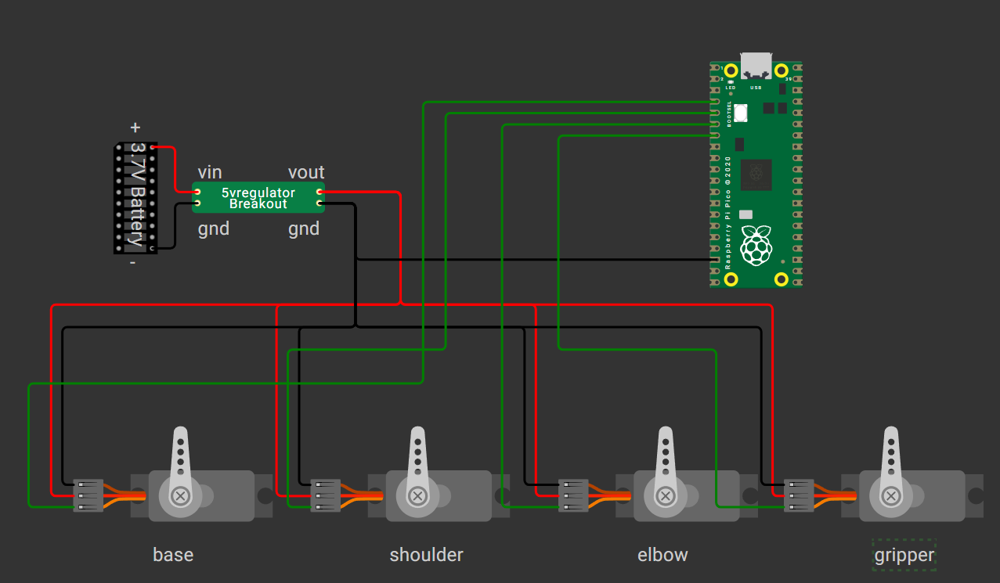
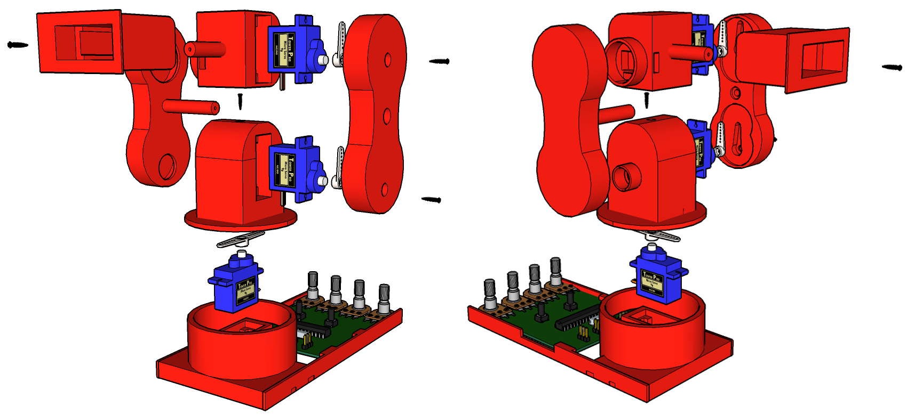
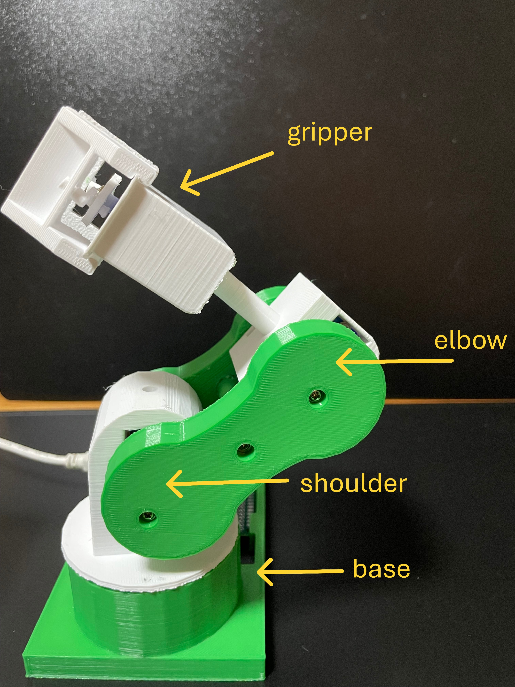

What You Need
Learning Goals
- Understand the concept of Degrees of Freedom (DOF) in robotic arms
- Control individual servos using PWM in MicroPython
- Write code for smooth sweeping motion between angles
- Sequence a realistic pick-and-drop movement
Step-by-Step Guide
🔌 Step 1: Wiring and Assembly
- Connect Servos to GPIO pins:
- Base → GP2
- Shoulder → GP3
- Elbow → GP4
- Gripper → GP5
- Use a separate 5V supply for servo power and connect all grounds together.

Circuit Diagram Pico Pinout
Pico Pinout
- Assemble Pedro 1.0: Follow the visuals below for fitting each servo into the printed parts. Use screws to secure parts as shown.

Pedro 1.0 Assembly Reference⚙️ Step 2: Understanding 4 Degrees of Freedom
"DOF" or Degrees of Freedom refers to the number of independent movements a robotic arm can make. Pedro has 4 DOF, which allows the end effector (gripper) to move through space to pick and place objects.
- Base Rotation (turning left/right)
- Shoulder Movement (lifting arm up/down)
- Elbow Bending (adjusting reach length)
- Gripper Control (open/close)
This structure enables a lot of flexibility with simple mechanics — similar to a human arm, minus the wrist and finger joints.

Pedro 1.0 - 4-DOF Robotic Arm Example🎮 Step 3: Test and Center Each Servo
Before doing anything fancy, let's center the servos to 90°.
from machine import Pin, PWM
from time import sleep
base = PWM(Pin(2))
shoulder = PWM(Pin(3))
elbow = PWM(Pin(4))
gripper = PWM(Pin(5))
# Set PWM frequency
for servo in [base, shoulder, elbow, gripper]:
servo.freq(50)
def move_servo(servo, angle):
min_us = 500
max_us = 2500
us = min_us + (max_us - min_us) * angle // 180
duty = int(us * 65535 / 20000)
servo.duty_u16(duty)
# Center all servos
move_servo(base, 90)
move_servo(shoulder, 90)
move_servo(elbow, 90)
move_servo(gripper, 90)
sleep(2)
# Quick motion demo
move_servo(shoulder, 30)
sleep(1)
move_servo(gripper, 0)
sleep(1)
move_servo(gripper, 180)
🌀 Step 4: Add Smooth Sweeping Motion
We’ll now add smooth transitions between angles to make the motion more natural (instead of jumping).
def angle_to_duty(angle):
min_us = 500
max_us = 2500
us = min_us + (max_us - min_us) * angle // 180
return int(us * 65535 / 20000)
def sweep_to_angle(servo, current_angle, target_angle, step=2, delay=0.02):
if current_angle < target_angle:
for angle in range(current_angle, target_angle + 1, step):
servo.duty_u16(angle_to_duty(angle))
sleep(delay)
else:
for angle in range(current_angle, target_angle - 1, -step):
servo.duty_u16(angle_to_duty(angle))
sleep(delay)
return target_angle
🎯 Step 5: Create a Pick-and-Drop Action Sequence
Now let’s use the sweep_to_angle function to perform a full pick-drop-reset cycle with smooth motion.
# Initial positions
base_angle = 0
shoulder_angle = 0
elbow_angle = 0
gripper_angle = 0
sleep(1)
# Move to pick-up pose
base_angle = sweep_to_angle(base, base_angle, 90)
sleep(1)
shoulder_angle = sweep_to_angle(shoulder, shoulder_angle, 90)
elbow_angle = sweep_to_angle(elbow, elbow_angle, 0)
gripper_angle = sweep_to_angle(gripper, gripper_angle, 100)
sleep(1)
# Lift object
shoulder_angle = sweep_to_angle(shoulder, shoulder_angle, 60)
elbow_angle = sweep_to_angle(elbow, elbow_angle, 10)
sleep(1)
# Move back and release
base_angle = sweep_to_angle(base, base_angle, 0)
sleep(1)
gripper_angle = sweep_to_angle(gripper, gripper_angle, 0)
sleep(1)
# Reset all
base_angle = sweep_to_angle(base, base_angle, 0)
shoulder_angle = sweep_to_angle(shoulder, shoulder_angle, 0)
elbow_angle = sweep_to_angle(elbow, elbow_angle, 0)
gripper_angle = sweep_to_angle(gripper, gripper_angle, 0)
Complete Video Tutorial
Watch the full step-by-step build and code walkthrough for this module. Pause and follow along at your own pace!
Quick Recap
- ✅ 4-DOF arm wiring and assembly
- ✅ DOF concept and mapping to servos
- ✅ Centering and testing all servos
- ✅ Smooth sweeping code for natural motion
- ✅ Pick-and-drop sequence with MicroPython
🎯 What’s Next?
Try customizing the pick-and-drop sequence, or add more complex movements! Experiment with different angles and timings for your own robotic tasks.